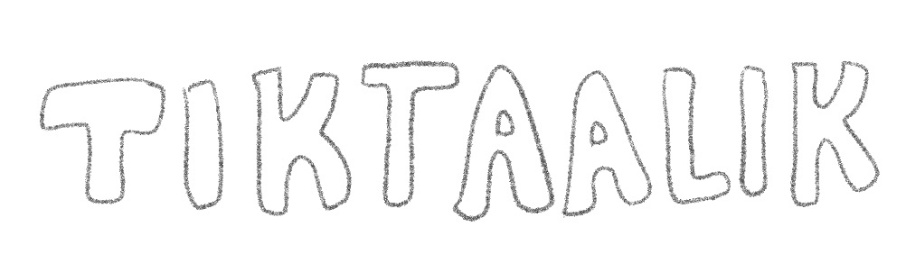
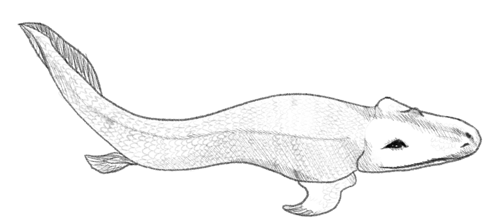
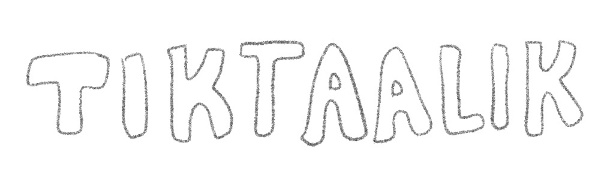
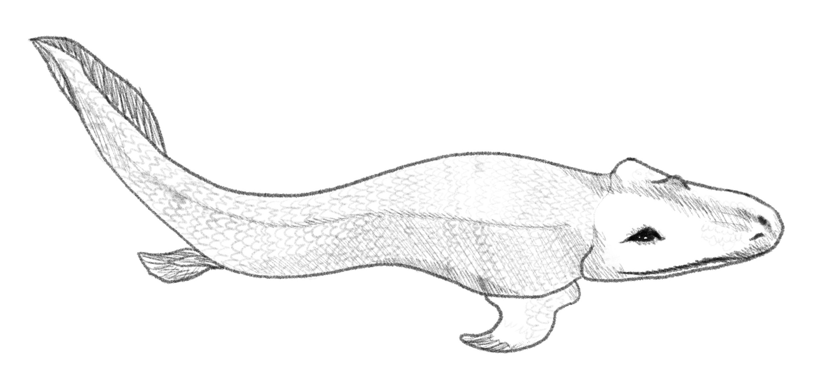

Tiktaalik’s fossils were vital to the understanding of tetrapods, as it was an early discovery in the gap between fish and tetrapods. These creatures existed during the Devonian period.Its naming is unique in that it is derived from an Inuktitut word as opposed to the traditional Greek naming system. Its key features include the build of its front fins, its neck, its rib cage and its head. Tiktaalik’s front fins featured bones that made up a very basic arm, featuring a wrist and fingers. These structures weren’t meant for walking, but rather may have allowed this creature to lift itself and move through shallows. It had a neck, a feature not seen in early fish, due to their bone reinforced gills. Tiktaalik had gills and the ability to turn its head thanks to the lack of bone supporting its gills. The creature had a stronger ribcage in comparison to other fish, and its head may have featured spiracles, meaning Tiktaalik may have had the ability to consume oxygen from the air.